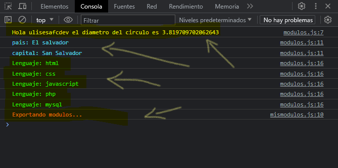
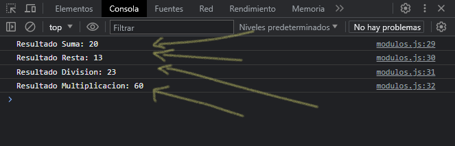

Nota: el módulo donde tengamos las estructuras o tipo de datos que estemos exportando deben estar en un archivo por separado, por ejemplo: ../ js / modules / mis-modulos.js
Al crear módulos se utilizan las sentencias export para exportar funciones, objetos, entre otros; también, se utiliza la sentencia import para importar las sentencias que hemos exportado desde un módulo.
Veamos la definición de cada una de estas dos sentencias con ejemplos sencillos.
Sentencia export
La declaración export se utiliza al crear módulos de JavaScript para exportar funciones, objetos o tipos de dato primitivos del módulo para que puedan ser utilizados por otros programas con la sentencia import.
Los módulos exportados están en strict mode tanto si se declaran asi como si no. La sentencia export no puede ser utilizada en scripts embebidos.
Existen dos tipos diferentes de exportación, nombrada y por defecto. Se pueden tener varias exportaciones nombradas por módulo pero solo una exportación por defecto.
// exportando una constante
export const PI = 3.1416
// exportando una variable
export let usuario = "ulisesafcdev"
// exportando un objeto
export let datos = {
pais: "El salvador",
capital: "San Salvador"
}
// exportando un arreglo
export let lenguajes = ["html", "css", "javascript", "php", "mysql"]
// exportando por defecto una funcion
export default function saludo () {
console.log(`Exportando modulos...`)
}
Sentencia import
La sentencia import se usa para importar funciones que han sido exportadas desde un módulo externo.
Nota: Cuando vayamos a importar sentencias o estructuras de un archivo externo, el archivo donde estemos importando, ese sera el que debamos incluir en nuestra pagina, dentro de la etiqueta script con su ruta source src = "../js/modulos.js" agregando el atributo type indicando uso de módulos type = "module".
// importando
import saludo, { PI, usuario, datos, lenguajes } from "./modules/mismodulos.js"
// calculando diametro con la constante PI exportada
let diametro = 12 / PI
// mostrando en consola variable USUARIO exportada
console.log(`Hola ${usuario} el diametro del circulo es ${diametro}`)
// recorriendo el objeto exportado
for (const key in datos) {
console.log(`${key}: ${datos[key]}`)
}
// recorriendo el arreglo exportado
for (const i of lenguajes) {
console.log(`Lenguaje: ${i}`)
}
// invocando funcion exportada por default
saludo()
Teniendo como resultado lo mismo como si no estuviéramos usando módulos:
Ejemplo
En este ejemplo crearemos un modulo donde exportaremos funciones basándose en operaciones aritméticas, es un ejemplo bastante sencillo solo para ver como es el comportamiento y uso de módulos.
Primero, crearemos un archivo donde tendremos las funciones con las operaciones aritméticas básicas, recordemos que los módulos deben estar en una carpeta aparte en archivo por separado, por ejemplo, ../ js / modules / operaciones-aritmeticas.js, ahi crearemos nuestras funciones que exportaremos:
function sumar(a, b) {
return a + b
}
function restar(a, b) {
return a - b
}
function dividir(a, b) {
return a / b
}
function multiplicar(a, b) {
return a * b
}
export const operacionesAritmeticas = {
sumar,
restar,
dividir,
multiplicar
}
Hemos declarado 4 funciones llamadas sumar(), restar(), dividir() y multiplicar(). Estas 4 funciones las hemos exportado en un objeto llamado operacionesAritmeticas (tambien podemos exportar estructuras o funciones en forma de objeto como lo es este ejemplo).
El archivo que incluiremos en nuestra pagina, ahi importaremos de la siguiente manera:
import { operacionesAritmeticas as operaciones } from "./modules/operaciones-aritmeticas.js";
let suma = operaciones.sumar(12, 8)
let resta = operaciones.restar(18, 5)
let division = operaciones.dividir(69, 3)
let multiplicacion = operaciones.multiplicar(12, 5)
console.log(`Resultado Suma: ${suma}`)
console.log(`Resultado Resta: ${resta}`)
console.log(`Resultado Division: ${division}`)
console.log(`Resultado Multiplicacion: ${multiplicacion}`)
Vemos que hemos importado las funciones en forma de objeto, pero, hemos usado la palabra as, este indica un alias que podemos dar refiriéndonos (en este caso al objeto) para poder llamarlo por ese nombre, osea "operaciones" y asi llamar a cada función según la operación aritméticas que queramos realizar.
Teniendo como resultado en consola lo siguiente:
